09/11/2026 — Bệnh nhân 50 tuổi có điện tâm đồ và troponin bình thường – An toàn hay Hối tiếc? – rất nhiều điểm cần học từ ca này
Bản dịch tiếng Việt của bài "A 50-year-old with a normal ECG and troponin – Safe or Sorry? –so many learning points on this one" – Dr. Smith’s ECG Blog. Giữ nguyên toàn bộ 12 hình ảnh của bản gốc.

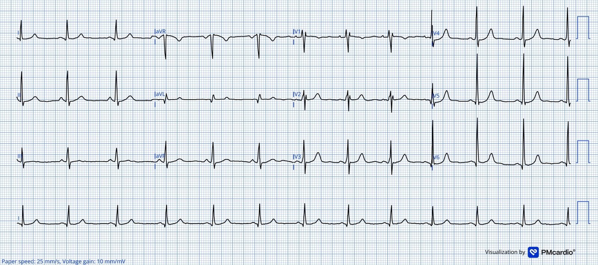
Bài này do Jack Cahill viết. Anh là một sinh viên y khoa xuất sắc và là người đọc điện tâm đồ giỏi. Willy Frick và Smith có chỉnh sửa đôi chỗ.
Một phụ nữ 50 mấy tuổi, có tăng huyết áp, thoái hóa khớp, hen phế quản, thiếu vitamin D và hai lần cơn thiếu máu não thoáng qua trước đây, đến khoa cấp cứu vì đau ngực 24 giờ. Bệnh sử được ghi nhận nói rằng bà đã có triệu chứng ở ngực trong 1 tuần. Các dấu hiệu sinh tồn của bà bình thường, ngoại trừ tăng huyết áp rõ (HA ~ 170/100).
Một điện tâm đồ được ghi ngay sau khi bệnh nhân đến:
Điện tâm đồ 1

Bạn nghĩ gì?
= = =
Điện tâm đồ trông không có gì đặc biệt. Với tôi, không có bằng chứng rõ ràng của thiếu máu cục bộ. Hai lần xét nghiệm troponin độ nhạy cao đã được làm — chỉ cách nhau 50 phút, cả hai đều “âm tính”. Với các dấu ấn sinh học có vẻ trấn an và một điện tâm đồ được đọc là bình thường, không làm thêm xét nghiệm hay điện tâm đồ nào nữa, và bà được cho về nhà với thuốc giảm đau thông thường và điều trị cho trào ngược được cho là nguyên nhân.
Smith: (đáng tiếc là các chi tiết không có trong hồ sơ bệnh án). Troponin “âm tính” thực sự duy nhất là troponin không phát hiện được. Luôn luôn phải báo cáo giá trị chính xác và đơn vị. Không có dữ liệu đó, chúng ta không biết đây có thực sự là một troponin âm tính hay không.
Đáng tiếc là triệu chứng của bà không hết. Chúng nặng lên. Bà quay lại khoa cấp cứu 5 giờ sau đó với cơn đau ngực “không chịu nổi” vẫn đang tiếp diễn. Điện tâm đồ ghi lại của bà được trình bày dưới đây:
Điện tâm đồ 2

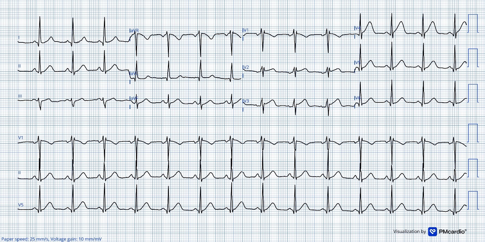
Bây giờ bạn nghĩ gì?
= = =
Giờ đây có sự gia tăng đáng kể biên độ và diện tích sóng T, không tương xứng với các phức bộ QRS đi trước. Đây là sóng T tối cấp, rõ nhất ở V4, nhưng có thể nói là hiện diện ở cả các chuyển đạo thành dưới lẫn trước-bên, nhất là khi so với điện tâm đồ trước.
Smith: còn có sóng Q mới ở chuyển đạo V4 và các sóng Q rộng hơn, sâu hơn một chút ở V5-6.
Đây là hình ảnh chẩn đoán tắc LAD cấp, nhiều khả năng liên quan đến một LAD "vòng qua mỏm" (wraparound) cấp máu cho vùng mỏm thành dưới.
Điện tâm đồ này không được đọc là STEMI/OMI và không có hành động xử trí tức thời nào.
Smith: Đây là kết quả của mô hình AI điện tâm đồ PMcardio Queen of Hearts:

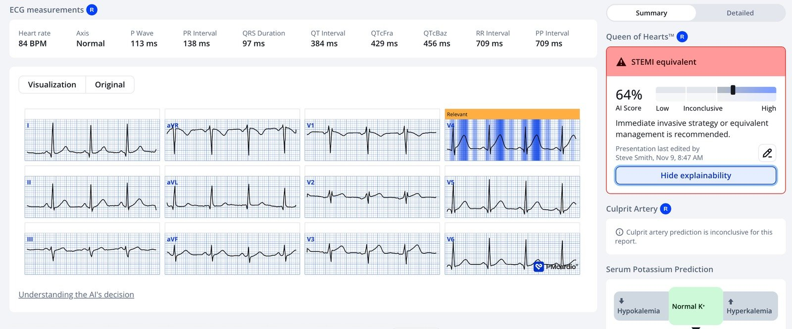
Smith: Mô hình mới của chúng tôi, hiện chưa được phát hành, cho biết chẩn đoán phân biệt còn bao gồm cả “tái cực sớm”.
Bất chấp điều mà họ cho là một điện tâm đồ âm tính, troponin I ban đầu của bà trả về là 250 ng/L.
Lần đo lại, mãi 12 giờ sau mới được đo (!) tăng vọt lên 48,000 ng/L, xác nhận tổn thương cơ tim lan rộng. Bà được điều trị hội chứng vành cấp (ACS) và chuyển đến một trung tâm có PCI.
Điện tâm đồ ghi lại khi bệnh nhân đến cho thấy các thay đổi tái tưới máu đang tiến triển, với sóng T tối cấp xẹp dần và xuất hiện sóng T đảo ngược phần cuối ở các chuyển đạo trước-bên và thành dưới:
Điện tâm đồ 3

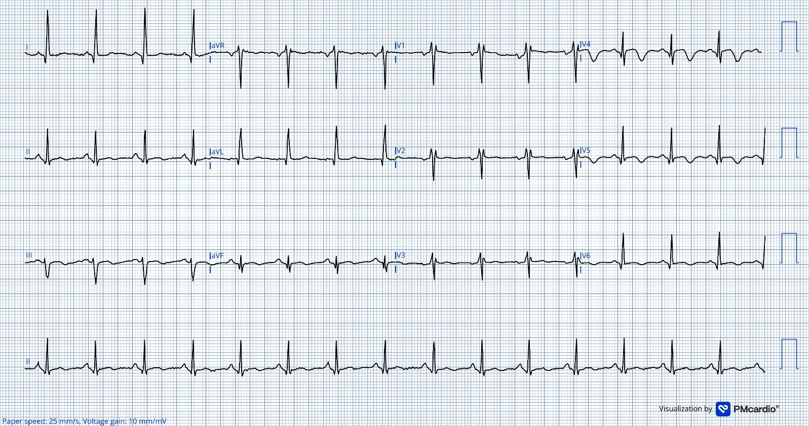
Chụp mạch vành được thực hiện vào ngày hôm sau:
- Thân chung động mạch vành trái: Không tắc nghẽn.
- Động mạch liên thất trước: LAD típ IV, dòng chảy TIMI 3, với một chỗ thay đổi khẩu kính đột ngột dạng bậc thang ở đoạn giữa mạch, gợi ý SCAD (bóc tách động mạch vành tự phát).
- Động mạch mũ trái: Ưu thế và không tắc nghẽn.
- Động mạch vành phải: Không ưu thế, mạch khẩu kính nhỏ.
Không thực hiện hình ảnh học trong lòng mạch vành và không tiến hành PCI. Siêu âm tim cho thấy rối loạn chức năng tâm thu thất trái với mỏm tim phình dạng bóng và mỏm tim vô động.
Mặc dù hình ảnh này giống hội chứng Takotsubo (bệnh cơ tim do stress), các dấu hiệu trên chụp mạch vành đưa ra một lời giải thích khác. Luôn luôn phải chụp mạch vành trước khi chẩn đoán takotsubo. Một LAD típ IV (LAD vòng qua mỏm) cấp máu cho cả mỏm tim lẫn thành dưới; do đó tắc thoáng qua do SCAD có thể gây ra một ổ nhồi máu vùng mỏm lan rộng với hình ảnh phình dạng bóng kinh điển.
Đây là điện tâm đồ sau chụp mạch vành:
Điện tâm đồ 4

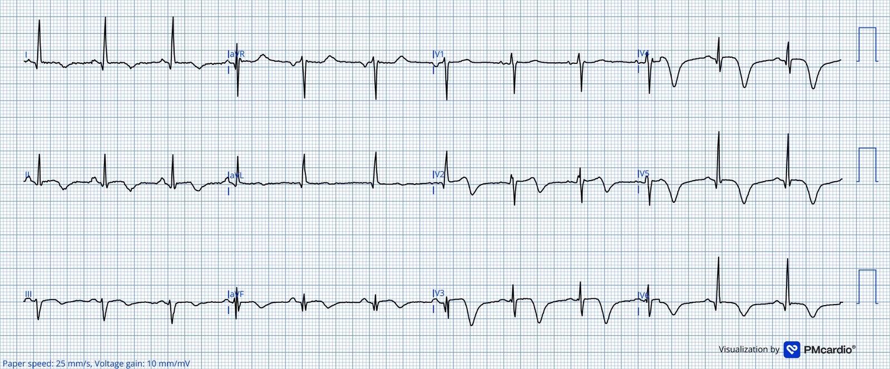
Tái tưới máu vùng trước-bên-mỏm đang tiếp diễn.
= = =
Queen nói gì về bản ghi này?

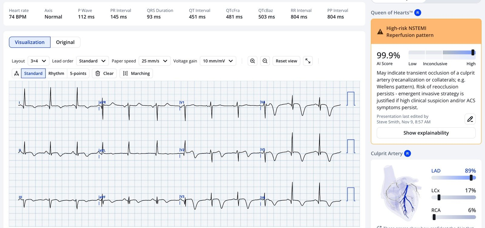
Queen đồng ý là có tái tưới máu, với độ chắc chắn 99.9%!
Chẩn đoán chung cuộc là: ‘Bóc tách động mạch vành tự phát’.
= = =
Bàn luận
Phụ nữ vẫn có nguy cơ cao hơn bị chẩn đoán ACS muộn hoặc bị bỏ sót, và góp phần dẫn đến kết cục xấu hơn sau nhồi máu cơ tim. Trong ca này, bệnh sử được ghi nhận sai về mặt sự kiện, điều này làm giảm mức nghi ngờ nhồi máu cơ tim cấp, có thể khiến việc chăm sóc bị trì hoãn thêm nữa so với mức đã bị trì hoãn. Triệu chứng kéo dài hoặc từng lúc không nên làm bạn yên tâm. Bệnh lý mạch vành không ổn định có thể diễn tiến qua các đợt tắc và tái tưới máu tự phát lặp đi lặp lại…
…Tắc mạch vành cấp là một quá trình động. Triệu chứng, điện tâm đồ, troponin và mức độ ổn định của bệnh nhân sẽ thay đổi khi ổ nhồi máu tiến triển. Trong những ca này, thời gian là yếu tố then chốt — đừng chờ troponin hay tiêu chuẩn STEMI rồi mới kích hoạt phòng thông tim (cath lab)!
- SCAD là một nguyên nhân gây ACS chưa được nhận biết đúng mức. SCAD là hậu quả của sự phá vỡ bên trong thành mạch vành. SCAD được cho là chủ yếu do sự lan rộng của một khối máu tụ trong thành mạch chèn ép lòng thật của động mạch vành.
- Khối máu tụ trong thành mạch có thể xuất hiện sau một vết rách nội mạc hoặc do chảy máu tự phát trong thành mạch. Huyết khối chồng lên do tổn thương nội mạc cũng có thể làm suy giảm dòng chảy phía xa.
- Trong SCAD, dòng chảy mạch vành có thể dao động khi khối máu tụ lan rộng hoặc giảm áp. Vì vậy, đến thời điểm chụp mạch vành, bệnh nhân có thể có điện tâm đồ OMI(+) và/hoặc STEMI (+), nhưng lại có dòng chảy TIMI 3 – điều chúng ta gặp ở ~ 20% các ca STEMI.
- Smith: Mức troponin 48,000 là quá cao đối với takotsubo. Xem dữ liệu bên dưới. Trong một bài báo (J Electrocardiol năm nay, xem tài liệu tham khảo bên dưới), nồng độ troponin I đỉnh trong takotsubo biểu hiện không có ST chênh lên (tương ứng với điện tâm đồ này) có trung vị 0.59 ng/mL (IQR: 0.22-1.71) và giá trị ban đầu là 0.27 (IQR: 0.09-0.99).
Có lẽ thăm dò quan trọng nhất bị bỏ sót trong lần đánh giá ban đầu không phải là một xét nghiệm máu nữa, mà là một điện tâm đồ nữa? Các điện tâm đồ liên tiếp thường cho thấy thiếu máu cục bộ đang tiến triển, từ rất lâu trước khi các dấu ấn sinh học trở nên bất thường một cách rõ ràng.
Hình ảnh siêu âm tim trong ca này cũng minh họa một cạm bẫy chẩn đoán: một LAD vòng qua mỏm có thể giống bệnh cơ tim takotsubo. Chụp mạch vành vẫn là điều thiết yếu trước khi quy hình ảnh này cho bệnh cơ tim do stress.
Smith: Nhưng điện tâm đồ cũng tiến triển trong takotsubo, và thường là sau khi sóng T đảo ngược thì chúng trở nên dễ nhận ra hơn nhiều nhờ QT dài một cách kỳ dị. Ví dụ: This ECG is nearly pathognomonic. What is it? (hint: it’s not Wellens’) (Điện tâm đồ này gần như đặc hiệu chẩn đoán. Đó là gì? (gợi ý: không phải Wellens))

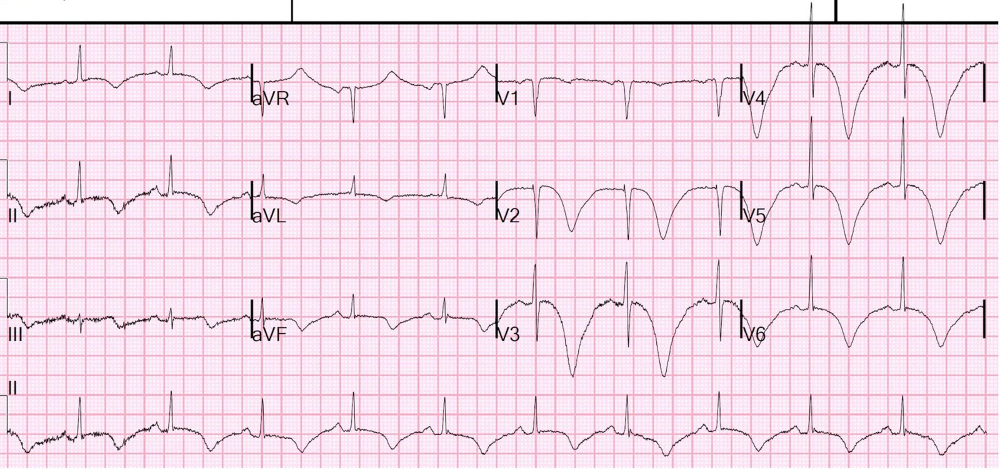
Thêm các ca ở đây minh họa khó khăn khi quy hình ảnh mỏm tim phình dạng bóng cho takotsubo, một số ca được liệt kê dưới đây:
https://drsmithsecgblog.com/?s=wraparound+takotsubo (kết quả tìm kiếm “LAD vòng qua mỏm + takotsubo” trên blog)
- DIffuse ST Elevation with Apical Ballooning: is it Takotsubo Stress Cardiomyopathy?
(ST chênh lên lan tỏa kèm mỏm tim phình dạng bóng: có phải bệnh cơ tim do stress Takotsubo?)

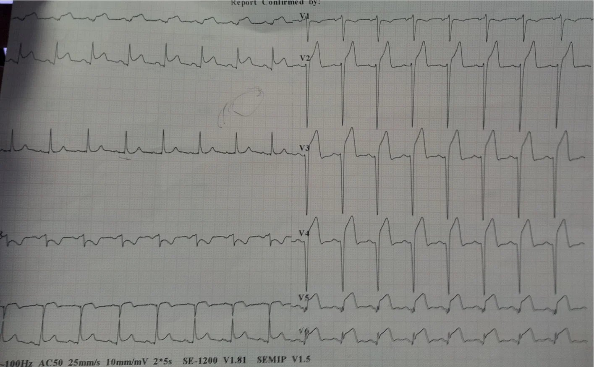
= = =
2. Diffuse ST elevation and Chest pain in an Agitated Middle-aged male: Anterior STEMI or Takotsubo Stress Cardiomyopathy? (ST chênh lên lan tỏa và đau ngực ở một nam giới trung niên kích động: STEMI thành trước hay bệnh cơ tim do stress Takotsubo?)

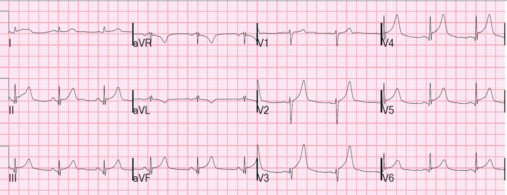
= = =
3. A 40-something woman with acute pulmonary edema — see the Speckle Tracking echocardiogram.
(Một phụ nữ 40 mấy tuổi bị phù phổi cấp — xem siêu âm tim đánh dấu mô (speckle tracking).)

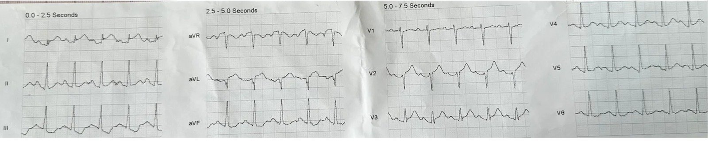
= = =
4. Upon arrival to the emergency department, a senior emergency physician looked at the ECG and said “Nothing too exciting.” (Khi bệnh nhân đến khoa cấp cứu, một bác sĩ cấp cứu thâm niên nhìn điện tâm đồ và nói “Chẳng có gì đáng chú ý lắm.”)

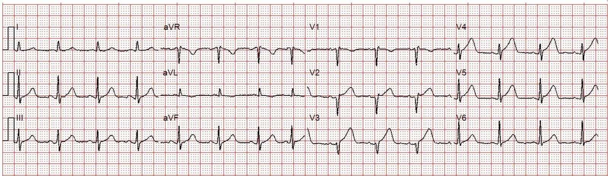
Một số thông tin về troponin trong bài đó:
Troponin
Troponin I độ nhạy cao đạt đỉnh ở mức 9,324 ng/L
(xấp xỉ tương đương 9.32 ng/mL theo các xét nghiệm thế hệ 4 và các thế hệ cũ hơn.)
Điều này quan trọng vì mức tăng troponin I trong takotsubo không cao đến thế. Trong một bài báo gần đây (J Electrocardiol năm nay, xem tài liệu tham khảo bên dưới), nồng độ troponin I đỉnh trong takotsubo biểu hiện không có ST chênh lên (tương ứng với điện tâm đồ này) có trung vị 0.59 ng/mL (IQR: 0.22-1.71) và giá trị ban đầu là 0.27 (IQR: 0.09-0.99).
—–Troponin I cao nhất được báo cáo trong y văn là (> 24,000, quá cao để xác định cụ thể)
—–Ở những bệnh nhân biểu hiện có ST chênh lên, giá trị đỉnh là 1.02 ng/mL [IQR: 0.46, 2.35], và giá trị ban đầu là 0.51 (IQR: 0.12-1.27).
Lưu ý 1: Nồng độ thấp hơn có ý nghĩa ở takotsubo biểu hiện không có “ST chênh lên”. Không chắc sóng T tối cấp sẽ được xếp vào nhóm nào. Nhưng chắc chắn những bệnh nhân có sóng T đảo ngược thuộc nhóm “Không có ST chênh lên”.
Lưu ý 2: Bài báo này không nêu rõ đó là troponin I hay T, nhưng tôi đã liên hệ với cơ sở đó và họ chỉ dùng troponin I trong suốt giai đoạn đó.
Tài liệu tham khảo về troponin, Scott Sharkey của Minneapolis Heart Institute là tác giả chính (senior author) (đã công bố nhiều về Takotsubo): Xenogiannis I, Vemmou E, Nikolakopoulos I, và cs. The impact of ST-segment elevation on the prognosis of patients with Takotsubo cardiomyopathy. J Electrocardiol [Internet] 2022; Truy cập tại: http://dx.doi.org/10.1016/j.jelectrocard.2022.09.009.
= = =
Những điểm CHÍNH:
- Một điện tâm đồ bình thường và troponin âm tính sớm không loại trừ OMI. Các điện tâm đồ liên tiếp có so sánh và troponin được đo đúng thời điểm vẫn là nền tảng của chẩn đoán.
- SCAD là một nguyên nhân quan trọng của OMI thoáng qua. Chụp mạch vành có thể cho thấy dòng chảy TIMI 3 dù tổn thương đáng kể. OMI là một quá trình động.
- Đánh giá lại lâm sàng là một trong những công cụ chẩn đoán có tác động lớn nhất. Đau ngực kéo dài hoặc nặng lên cần thúc đẩy một đợt đánh giá mới, sâu hơn.
- Nếu bạn nghi ngờ ACS, bạn phải ghi điện tâm đồ và đo troponin liên tiếp, thường xuyên.
- Smith: Nếu tôi có một điện tâm đồ đáng ngờ nhưng chưa có giá trị chẩn đoán (tuy nhiên, điện tâm đồ này đã có giá trị chẩn đoán) — tôi sẽ ghi điện tâm đồ liên tiếp mỗi 15 phút và đo troponin liên tiếp mỗi 30 phút. Đừng chờ đợi!
- Đừng nói troponin là “âm tính.” Hãy nêu loại xét nghiệm, giá trị, đơn vị (ng/mL, ng/L), LoD (giới hạn phát hiện), delta, giá trị mà dưới ngưỡng đó một lần đo đơn lẻ có thể loại trừ nếu đau ngực đã xuất hiện >2 giờ
- Ví dụ, sau khi hỏi, tôi biết được đây là xét nghiệm hs-cTnI Abbott Architect. Xét nghiệm này có LoD là 1.7 (3.0 ở Mỹ do quy định của FDA. Một giá trị đơn lẻ < 5 ng/L loại trừ nhồi máu cơ tim nếu được lấy ít nhất 2 giờ sau khi khởi phát đau ngực. Với một giá trị cao hơn nhưng dưới bách phân vị thứ 9 [người dịch: nhiều khả năng là bách phân vị thứ chín mươi chín, lỗi đánh máy] (34 ng/L ở nam và 16 ng/L ở nữ, một delta <3 ng/L giúp loại trừ với độ nhạy và NPV cao nhưng không tuyệt đối.
Anand A, Lee KK, Chapman AR, và cs. High-Sensitivity Cardiac Troponin on Presentation to Rule Out Myocardial Infarction: A Stepped-Wedge Cluster Randomized Controlled Trial. Circulation [Internet] 2021;143(23):2214–24. Truy cập tại: http://dx.doi.org/10.1161/CIRCULATIONAHA.120.052380
= = =
======================================
BÌNH LUẬN CỦA TÔI, bởi KEN GRAUER, MD (9/11/2026 ):
Một vài sơ suất đơn giản-nhưng-quan trọng đã dẫn đến những vấn đề gặp phải trong ca hôm nay. Tôi tập trung Bình luận của tôi vào một vài nguyên tắc nền tảng để tránh những sơ suất này.
- Để rõ ràng, trong Hình 1 — tôi đã đặt lại 2 bản ghi đầu tiên của ca hôm nay để làm nổi bật những sơ suất này.
= = =
Sơ suất #1: Cần chờ đợi điều gì ở điện tâm đồ ban đầu
Bệnh nhân hôm nay đến khoa cấp cứu vì CP (đau ngực). Bất kể cơn đau ngực của bệnh nhân này xuất hiện từng lúc trong suốt tuần trước (như ghi trong bệnh sử được ghi nhận) — hay — là mới khởi phát, bắt đầu trong 24 giờ trước đó (như sau này đã được làm rõ là đúng như vậy) — thì điện tâm đồ ban đầu cần được diễn giải với nhận thức rằng OMI cấp là một quá trình động, đang tiến triển.
- Như một phần của diễn tiến tự nhiên — thường có những giai đoạn tắc động mạch “thủ phạm” xen kẽ với những giai đoạn ngắn tái tưới máu tự phát (trong đó đau ngực của bệnh nhân có thể giảm hoặc hết — đi kèm với sự “cải thiện” của các dấu hiệu cấp trên điện tâm đồ).
- Những giai đoạn ngắn tái tưới máu tự phát này — thường xen kẽ với những giai đoạn tắc lại tự phát cũng ngắn như vậy, trong đó triệu chứng quay lại đi kèm với sự quay lại của các bất thường ST-T cấp.
Thông điệp “cần nhớ“: Điện tâm đồ ban đầu cần được diễn giải với nhận thức về diễn tiến tự nhiên này.
- Tùy thuộc vào việc điện tâm đồ ban đầu được ghi vào lúc nào trong quá trình diễn tiến động này — các thay đổi ST-T cấp có thể (hoặc có thể không) thấy được trên điện tâm đồ ban đầu. Và nếu thấy được — các thay đổi ST-T có thể kín đáo.
- Chúng ta cần phải tìm kiếm những thay đổi ST-T kín đáo — những thay đổi mà ở một bệnh nhân không triệu chứng có thể không có ý nghĩa. Nhưng ở một bệnh nhân đến khoa cấp cứu vì đau ngực — những thay đổi ST-T kín đáo có thể là một manh mối quan trọng!
- Như Jack Cahill cùng Dr. Frick và Dr. Smith đã nêu — một điện tâm đồ đơn lẻ là không đủ để loại trừ OMI cấp. Thay vào đó — luôn luôn phải ghi lại một hoặc nhiều bản ghi lặp lại, đặc biệt nếu có thay đổi về sự hiện diện hoặc mức độ triệu chứng của bệnh nhân trong thời gian theo dõi tại khoa cấp cứu (điều không thể xác định được trong ca hôm nay — vì không có ghi chép nào về việc đau ngực của bệnh nhân có hiện diện, tăng lên hay giảm đi vào thời điểm ghi điện tâm đồ ban đầu hay không).
= = =
Sơ suất #2: Điện tâm đồ ban đầu không “bình thường”
Xin nhấn mạnh — điện tâm đồ ban đầu trong ca hôm nay không có giá trị chẩn đoán. Nhưng ở một bệnh nhân đến khoa cấp cứu vì đau ngực — điện tâm đồ ban đầu không “bình thường”.
- Như thường được nhấn mạnh trong Dr. Smith’s ECG Blog — chuyển đạo V2 và V3 bình thường có ST chênh lên nhẹ, dốc lên thoai thoải. Như ghi nhận dưới đây trong Hình 1 — chuyển đạo V3 thay vào đó lại có đoạn ST thẳng đuỗn (đường MÀU ĐỎ ở chuyển đạo V3).
- Tiếp theo đó, ở chuyển đạo V4 lân cận có điểm J chênh xuống kín đáo-nhưng-có-thật (mũi tên MÀU VÀNG ở chuyển đạo này).
- Với những dấu hiệu kín đáo này ở các chuyển đạo V3,V4 — tôi cho rằng hình dạng ST-T ở chuyển đạo V2 lân cận cũng “không ổn” — ở chỗ dù phức bộ rSr’ gần như giống hệt nhau ở chuyển đạo V1 và V2, đoạn ST ở chuyển đạo V2 lại dẹt và kết thúc bằng một sóng T dương (trông khá khác so với ST-T ở chuyển đạo V1).
- Xin nhấn mạnh lại — điện tâm đồ #1 không có giá trị chẩn đoán. Nhưng trong bối cảnh chúng ta cần tìm kiếm những thay đổi có thể kín đáo — tôi đã không diễn giải bản ghi này là “âm tính”. Tôi sẽ muốn đối chiếu bản ghi này với sự hiện diện và mức độ nặng tương đối của triệu chứng bệnh nhân trong suốt thời gian ở khoa cấp cứu — và một điện tâm đồ ghi lại có vẻ là điều thiết yếu trước khi cho bệnh nhân về.
= = =
Hình 1: So sánh giữa điện tâm đồ thứ 1 và thứ 2 trong ca hôm nay.

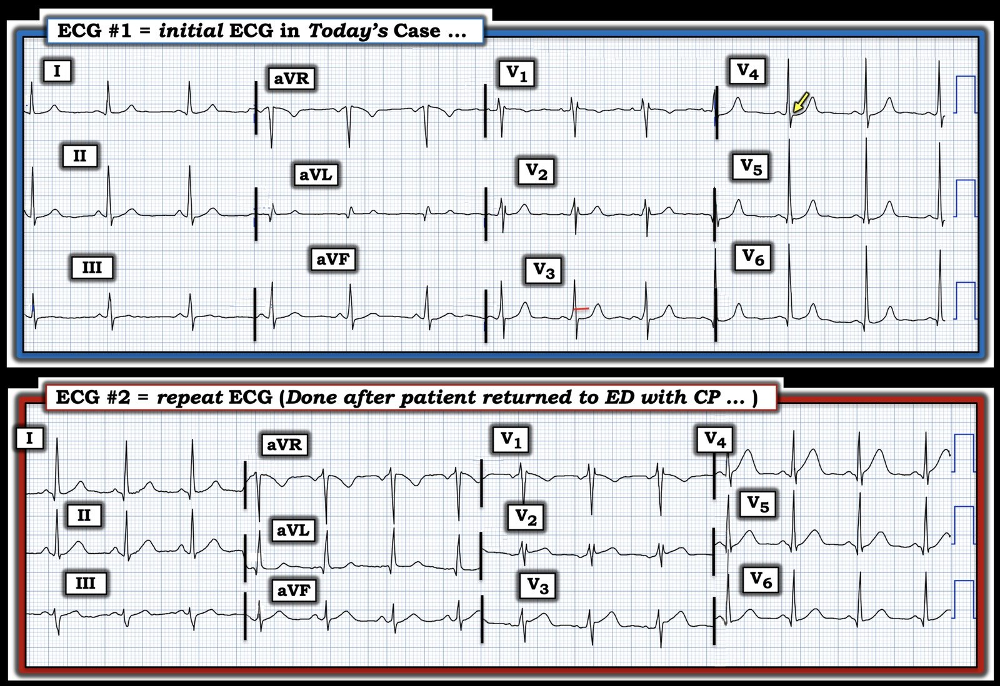
= = =
Sơ suất #3: Cách so sánh các bản ghi liên tiếp
Bệnh nhân quay lại khoa cấp cứu sau khi được cho về vì đau ngực nặng lên. Điện tâm đồ ghi lại “không được đọc là STEMI, và không có hành động xử trí tức thời nào”.
- Dù tôi không có mặt ở đó — theo định nghĩa, khi chúng ta nhìn vào Hình 1, nơi tôi đã đặt điện tâm đồ #1 và điện tâm đồ #2 cạnh nhau — việc so sánh từng chuyển đạo giữa 2 bản ghi này không thể nào lại không làm lộ rõ sự khác biệt về hình dạng ST-T giữa 2 bản ghi này.
- Tôi đã học được qua trải nghiệm đắt giá rằng trừ khi bạn xem xét từng chuyển đạo khi đánh giá các điện tâm đồ liên tiếp — sẽ RẤT DỄ bỏ qua những thay đổi ST-T “động” giữa 2 bản ghi.
- Sóng T ở các chuyển đạo chi rõ ràng dương hơn và “đầy đặn” (bulky) hơn ở điện tâm đồ #2 (đặc biệt ở chuyển đạo II và aVF).
- Trong khi đoạn ST ở các chuyển đạo trước tim V3,V4 dẹt, nếu không nói là hơi chênh xuống ở điện tâm đồ #1 — thì giờ đây có ST chênh lên tối cấp ở chuyển đạo V2,V3,V4 trên điện tâm đồ #2 (với đoạn ST thẳng đuỗn và sóng T “phình to” hơn nhiều ở đỉnh và rộng hơn ở đáy tại các chuyển đạo này).
- ĐIỀU CỐT LÕI: Bất kể giờ đây trên điện tâm đồ #2 đã có đủ ST chênh lên để đạt tiêu chuẩn “STEMI” hay chưa — những thay đổi ST-T “động” này, hiện đã rõ ràng khi so sánh từng chuyển đạo trong Hình 1, và hiện đang xảy ra đồng thời với việc đau ngực tái phát ở bệnh nhân này — là chỉ định rõ ràng cho thông tim ngay lập tức.
= = =
= = =